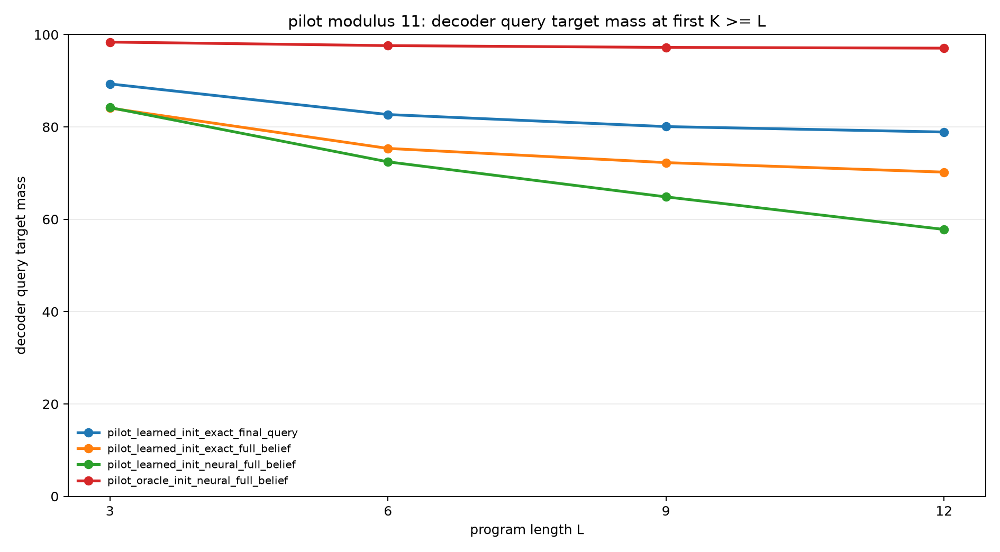
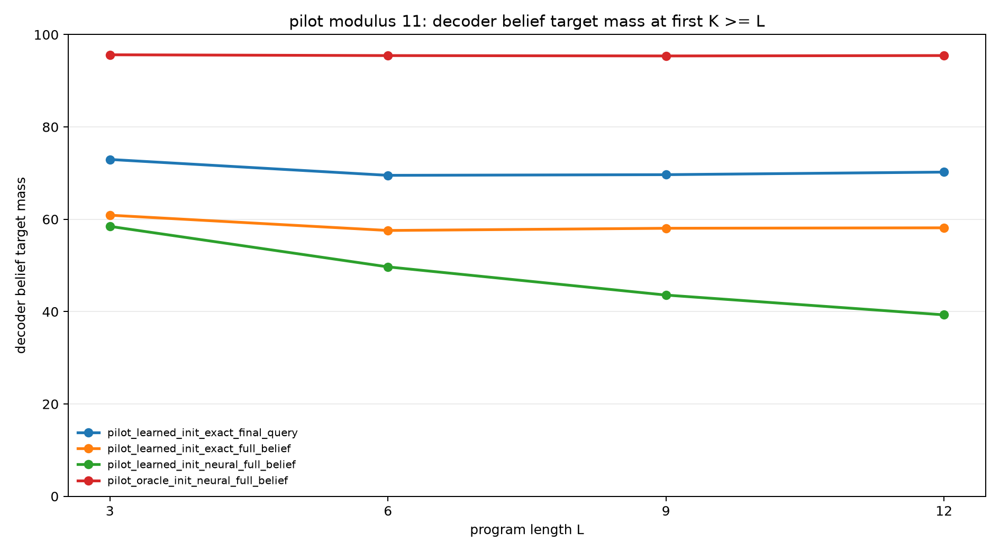
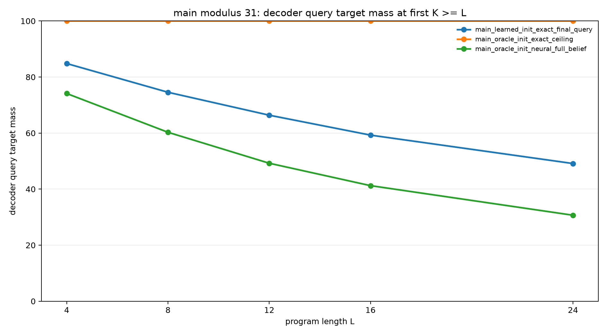
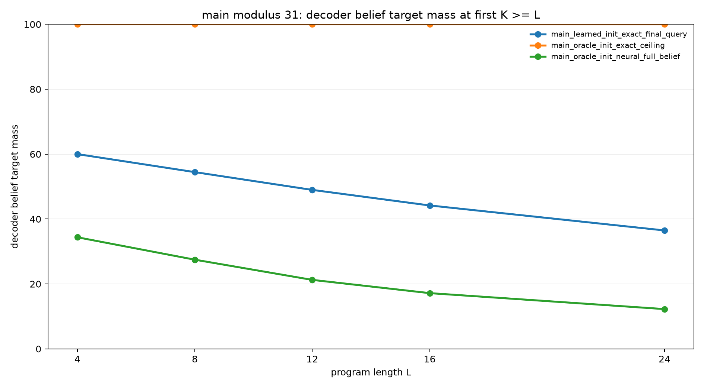
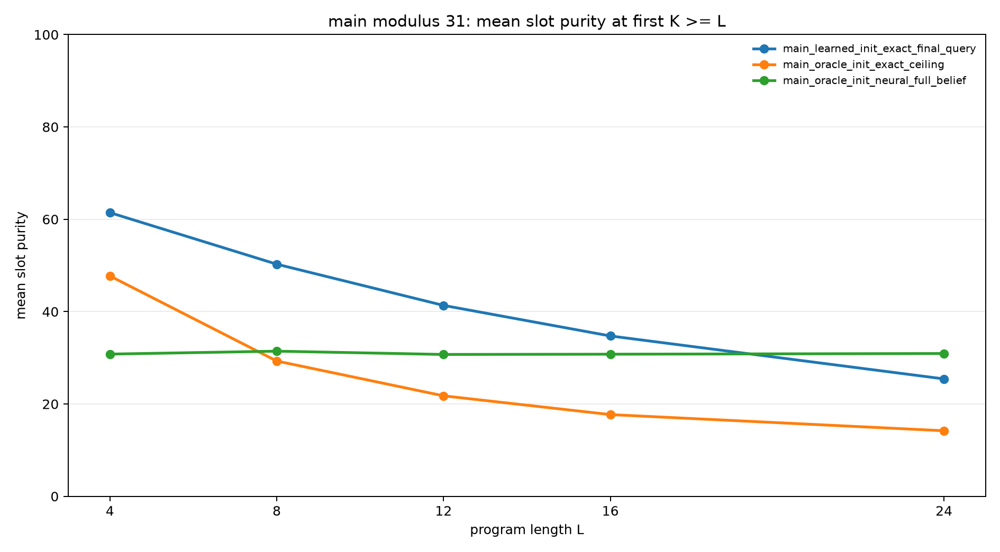

Learning Sparse Slot Execution for Modular Belief Programs
Abstract
This experiment tests whether a neural recurrent model can learn to use an explicit sparse slot memory for modular belief-state execution. Each example starts from a hidden relation over two registers, B = A + d (mod p), then applies arithmetic updates and observation filters.
The experiment separates two learnability questions: learning to initialize the slot memory and learning to update slots recurrently. At modulus 11, a neural transition module with oracle slot initialization learns strong recurrent execution, reaching 97.1% query mass and 95.5% belief mass at held-out length 12. At modulus 31, the same transition learner reaches only 30.7% query mass and 12.3% belief mass at length 24. Learned initialization with exact transitions scales better at modulus 31, reaching 49.1% query mass and 36.5% belief mass at length 24, but remains far from the exact oracle ceiling.
Task
B = A + d (mod p), with A unknownThe initial belief has p possible (A,B) states. Programs contain arithmetic updates and observation filters. Observation residues are sampled from the current support, so the target belief is never empty. The final query asks for the distribution of A, B, A+B mod p, or A-B mod p.
Model
The model maintains S slots. Each slot has logits over A, logits over B, and a scalar slot-weight logit. The decoded pair belief is:
P(A,B) = sum_s softmax(w)_s * P_s(A) * P_s(B)| Axis | Choices | Meaning |
|---|---|---|
| Initialization | oracle, learned | Oracle slots store the initial support; learned slots are produced by an MLP from d and a slot id. |
| Transition | exact, neural | Exact transitions apply the known update; neural transitions use an MLP conditioned on slot state, op, and argument. |
Protocol
| Phase | Modulus | Main purpose | Evaluation lengths |
|---|---|---|---|
| Smoke | 7 | Validate staged paths. | 2, 3 |
| Pilot | 11 | Compare initialization, transition, and end-to-end composition. | 3, 6, 9, 12 |
| Main | 31 | Test scale behavior of the strongest staged conditions. | 4, 8, 12, 16, 24 |
Pilot Results
| Variant | Init | Transition | Supervision | L=3 query | L=6 query | L=9 query | L=12 query | L=12 belief |
|---|---|---|---|---|---|---|---|---|
| Learned init, exact transition | learned | exact | full belief | 84.1% | 75.3% | 72.3% | 70.2% | 58.1% |
| Oracle init, neural transition | oracle | neural | full belief | 98.4% | 97.6% | 97.2% | 97.1% | 95.5% |
| Learned init, neural transition | learned | neural | full belief | 84.2% | 72.4% | 64.9% | 57.8% | 39.3% |
| Learned init, exact transition | learned | exact | final query | 89.3% | 82.7% | 80.1% | 78.9% | 70.2% |


Main Results
| Variant | Init | Transition | Supervision | L=4 query | L=8 query | L=12 query | L=16 query | L=24 query | L=24 belief |
|---|---|---|---|---|---|---|---|---|---|
| Oracle exact ceiling | oracle | exact | full belief | 100.0% | 100.0% | 100.0% | 100.0% | 100.0% | 100.0% |
| Oracle init, neural transition | oracle | neural | full belief | 74.1% | 60.3% | 49.2% | 41.2% | 30.7% | 12.3% |
| Learned init, exact transition | learned | exact | final query | 84.8% | 74.6% | 66.4% | 59.3% | 49.1% | 36.5% |
| Variant | L=4 belief | L=8 belief | L=12 belief | L=16 belief | L=24 belief |
|---|---|---|---|---|---|
| Oracle exact ceiling | 100.0% | 100.0% | 100.0% | 100.0% | 100.0% |
| Oracle init, neural transition | 34.4% | 27.5% | 21.3% | 17.2% | 12.3% |
| Learned init, exact transition | 60.0% | 54.5% | 49.0% | 44.2% | 36.5% |



Interpretation
The oracle exact ceiling proves that the slot representation can express the exact belief state. The learned models show that this state format is not automatically discovered at scale by generic MLP initializers and transitions.
The clearest positive result is local: at modulus 11, neural recurrent transitions are learnable when the initial support is already placed into slots. The main negative result is scale: the same transition parameterization fails to learn clean modular updates at modulus 31.
The learned initializer is more robust at modulus 31 than the neural transition, but it still learns an approximate support allocation rather than the exact one-slot-per-state machine.
Limitations
The neural transition is a generic MLP over expected slot embeddings and has no hard modular arithmetic inductive bias. The slot decoder also factorizes each slot as P_s(A)P_s(B), which is appropriate only when slots become sharp.
The main runs do not include a full-budget end-to-end modulus-31 model because the pilot showed that end-to-end learning was weaker than both staged conditions, and the main staged transition itself failed to scale.
Reproducibility
Run outputs are in experiments/learned_sparse_slot_executor/runs/. Checkpoints are stored externally under large_artifacts/learned_sparse_slot_executor/checkpoints/.
PYTHONDONTWRITEBYTECODE=1 python experiments/learned_sparse_slot_executor/src/analyze_learned_sparse_slot.py